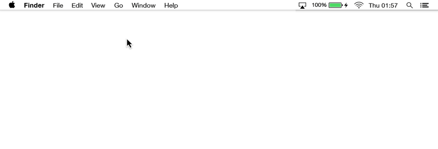

WDI Fundamentals Unit 2
Navigating the Command Line
We can perform actions using the command line by entering commands. There is a command to perform virtually any action you can imagine on your computer! There are commands to open an application, create new files, copy files from one place to another, and more.
Go ahead and open up Terminal using any of the following methods:
1) Navigate to your Applications folder, and double click on "Terminal."

2) Press Command + Space on your keyboard to bring up Spotlight — a tool that allows you to quickly find files and applications on our computer. Inside the search bar, type "Terminal," and select the Terminal application.

Let's start typing commands together. In your open terminal window, type hello? and press "enter:"
$ hello?
Your terminal should respond (rudely):
-bash: hello?: command not found
This is how your computer tells you that it does not understand the command you've entered. Remember, we have left the GUI world behind us, so we will no longer have pretty warning messages and alert boxes. But don't worry! In due time, as we grow more comfortable in this new environment, even these cryptic messages will be as clear as any warning box you'll ever see.
Try typing this into your terminal:
$ Where am I?
Again, we get a similar response:
-bash: Where: command not found
Great. We've established that our command line doesn't understand plain English, and that we'll have to use special words while writing our commands. Let's try this one to start:
$ pwd
Whoa! It looks like our computer understood that one! It replied with a message similar to this one:
/Users/corneliusfinch
(Note: On your machine, you should have seen corneliusfinch replaced with your username!)
If you're following along in Git Bash on Windows, the message will look similar but with some slight differences:
/c/Users/corneliusfinch
So, what did we just do?
The command pwd stands for "Print Working Directory."
We use this command when we want the command line to tell us which folder (or directory) of our computer we're currently in.
Just like the Finder on a Mac, your command line interface (CLI) places you in a particular folder
on your computer. pwd tells you where you're currently located in your file system. Usually, when you open a terminal application, you start off in your "home folder," which shares the name of your username on your computer.
If we were using Finder, we'd be able to see the files and folders that are present in this folder. In a CLI, however, if we want to see the files and folders in our current location, we need to ask for that using another command.
Let's find out which files are in our current folder.
$ ls
Lo and behold, the folder's contents are:
Applications Desktop Documents
Downloads Library Movies
Music Pictures Public
(Note: Again, on your own machine, because you may have different files and folders, you may see additional items when you enter ls!)
If you're following along in Git Bash on Windows, it's alright if the files and folders listed out look a little different, but you should still see similar folders such as Desktop, Documents, and Downloads.
The ls command, which loosely stands for "list," lists the contents of a folder.
It looks like there are some folders in here! Let's find out what's inside our Documents folder. In order to do so, we'll first navigate to that folder.
$ cd Documents
We have now navigated to the Documents folder.
The cd command, which stands for "change directory," is used to navigate to a particular folder on your computer.
This is equivalent to double clicking the Documents folder in Finder to "go
inside." We can check that we're in the right place by using pwd.
$ pwd
/Users/corneliusfinch/Documents
Excellent! Now, let's find out what's in the folder using ls.
$ ls
funny_cat_picture.jpg
office_stuff
world_domination_checklist.txt
(Note: Again, you will probably see different files and folders on your own machine!)
In our example, it looks like the Documents folder contains a JPG file of a funny cat, a folder
full of "office stuff," and a text file containing a checklist for
world domination. Your Documents folder probably contains something different.
Now that we've investigated our Documents folder, let's return to our home folder. Because the home folder contains the Documents folder, we can say that the home folder is the "parent directory" of the Documents folder.
$ cd ..
..(two periods, or "dot-dot") is how we say "parent directory" to our command line.
Many commands consist of three parts: the command, followed by flags (a.k.a., options), and finally, arguments.
$ command -flag -otheroption
As their name implies, flags set options to tell the command line how to do what it's about to do. There may be zero or more options. Options usually start with one or two dashes. For the most part, one dash is used for a short, one-letter abbreviation, while two dashes are used for a long name for the option.
Here's more information about command line options.
For example:
$ ls -a
Will list all files in a directory, including hidden files (files whose names begin with a .).
$ cd Downloads
Calls the command cd to change directories. We provide it with the option of where to navigate.